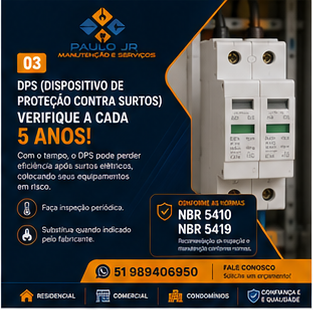
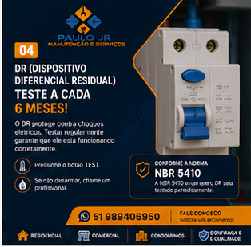

Manutenção bem feita, do jeito que sua casa precisa.
Elétrica, hidráulica, reparos e pintura para residências, comércios e condomínios. Peça um orçamento e fale direto com o Paulo Jr.
O que eu resolvo
-
Elétrica
Tomadas, interruptores, disjuntores, DR, DPS e revisão do quadro elétrico.
Pedir orçamento de elétrica -
Hidráulica
Vazamentos, flexíveis, boias, caixa acoplada, ralos, filtros e chuveiros.
Pedir orçamento de hidráulica -
Reparos e montagem
Fixação de espelhos, vedação de janelas, calhas e pequenos consertos.
Pedir orçamento de reparos -
Pintura
Pintura e impermeabilização para proteger contra umidade e mofo.
Pedir orçamento de pintura
Atendimento residencial, comercial e para condomínios.
Como funciona
-
Você manda uma mensagem
Conte o que precisa. Se puder, envie uma foto do problema.
-
Você recebe o orçamento
Eu passo o valor e combinamos o melhor dia para o serviço.
-
O serviço é feito
Vou até você no dia combinado e resolvo o que foi pedido.
Quando revisar cada item
Dicas de manutenção preventiva que publico no Instagram. Evite surpresas e gastos maiores.


Deslize para o lado para ver todas as dicas.
Ver mais dicas no InstagramO que dizem os clientes
5,0· 47 avaliações no Google
-
“Confiança, trabalho profissional de qualidade e preço justo. Recomendo!”
Jean Santos
Porto Alegre - Elétrica · novembro de 2026 -
“Sempre contamos com a excelência dos serviços prestados pelo Paulo Jr. Pessoa de extrema confiança e muito atenciosa! Recomendamos sem nenhuma ressalva! Podem confiar!”
Janice Fleck
Porto Alegre - Elétrica/Hidráulica · novembro de 2026 -
“Gostei muito, muito atencioso! Vale muito a avaliação!!!”
Barbara Gomes
Porto Alegre - Elétrica · novembro de 2026 -
“O Paulo é um excelente profissional, responsável, correto, pontual, honesto... Sempre que preciso de serviços de reformas, alvenaria, colocação de pisos e azulejos(PERFEITOS),elétrica, hidráulica etc, recorro a ele, pois sei que o serviço ficará perfeito e com valor apropriado ao que foi feito! Não conheço profissional melhor em Porto Alegre e região... APROVEITO PARA AGRADECER A ELE, POR TODAS AS VEZES QUE PRECISEI DOS SEUS SERVIÇOS. GRANDE ABRAÇO!”
André Luiz Costa Nunes
Porto Alegre - Reforma · novembro de 2026 -
“Profissional responsável, disponível, de confiança e com preço justo.”
Louise Borba
Porto Alegre - Reforma · novembro de 2026 -
“O paulo é um baita profissional! Atencioso, habilidoso e tranquilo . Já recebemos ele aqui em casa para algumas manutenções mais de uma vez e foram ótimas experiências. Eu indico muito.”
Miche Portella Domingues
Porto Alegre - Elétrica · novembro de 2026 -
“Excelente profissional, educado, preço justo, pontual. Recomendo.”
Angélica Souza
Canoas/Hidráulica-Elétrica · novembro de 2026 -
“Serviço de confiança e qualidade.”
Renato Diogo
Cachoeirinha/Elétrica · novembro de 2026 -
“Serviços com excelência e muita dedicação! Preço bom, Paulo fez a parte elétrica do meu bistrô em 2022, eu fiquei muito satisfeita com o trabalho dele. Toda vez que acontecia algo, ele que fazia os consertos. Além de ser uma pessoa de muita confiança e muito educado! Super indico!!!!!!”
Zilda Borges
Porto Alegre - Reforma · novembro de 2026 -
“Excelente trabalho, entrega um serviço completo, comprou o que esqueci, levou os cascalho. Além de ser de extrema confiança! Recomendo o trabalho.”
Karine Lugo
Porto Alegre - Reforma · novembro de 2026 -
“Profissional excelente, muito caprichoso. Ele faz tudo aqui em casa!”
Patrícia Diogo
Cachoeirinha - Diversos · novembro de 2026 -
“Desde que me mudei para POA ele è quem faz tudo de manutenção e obras lá em casa. Serviço muito bom, limpo e confiável.”
Marina Cianella
Porto Alegre - Diversos · novembro de 2026 -
“Excelente prestador, sempre responsável e atencioso. Cumpre prazos e combinados. Recomendo,”
Barra Sul Acium
Porto Alegre - Diversos · novembro de 2026 -
“O trabalho do paulo é excelente! recomendo de olhos fechados”
Victoria Citton
Porto Alegre - Elétrica · novembro de 2026 -
“Ótimo profissional! De confiança, preço justo e trabalha bem. Recomendo”
Kelen Soares
Guaíba - Elétrica/Diversos · novembro de 2026 -
“O Paulo é um excelente profissional. Trabalho sempre impecável. Ele já fez vários trabalhos pra mim, e todos ficaram ótimos. Super recomendo”
Ana Gomes
Porto Alegre - Diversos · novembro de 2026 -
“Profissional organizado e obra limpa! Serviço rápido e sem estresse, recomendo muito! Preço justo!”
Elemar
Canoas - Elétrica/Pintura · novembro de 2026 -
“Excelente profissional!!!”
J.R. Weingartner Jr.
Porto Alegre - Elétrica/Diversos · novembro de 2026 -
“Excelente profissional, sempre disposto a encontrar soluções e ajudar no que for preciso. Sempre indico para meus amigos!”
Tauane Lopes
Cachoeirinha - Elétrica · novembro de 2026 -
“Profissional competente, preço justo, pontual, marquei horário e ele já estava esperando. Recomendo.”
Fabrício Gomes
Porto Alegre - Elétrica · novembro de 2026 -
“Excelente profissional, rápido, eficiente , confiável e preço bom”
Elisabete Machado
Cachoeirinha - Elétrica/Hidráulica · novembro de 2026 -
“O Paulo é um excelente profissional, sempre disponível e pontual. Faz de tudo um pouco, e muito bem! Desde elétrica até hidráulica e outros reparos. Alem disso, é uma pessoa de confiança e faz um serviço de qualidade com preço justo.”
Valéria Aydos
Porto Alegre - Elétrica/Diversos · novembro de 2026 -
“O Paulo é excelente! Muito organizado e detalhista com os serviços que faz. 10/10!”
Laura de Oliveira
Sapucaia do Sul - Pintura/Elétrica · novembro de 2026 -
“Excelente profissional, super indico!”
Andréia Klein
Cachoeirinha - Diversos · novembro de 2026 -
“Profissional dedicado, muito atenciosa, conhecimento no serviço e desempenho rápido.”
Cesar Eduardo dos Santos
Cachoeirinha - Elétrica · novembro de 2026 -
“Profissional super prestativo e competente. Ajuda demais.”
Rafael Bortolini
Porto Alegre - Elétrica/Diversos · novembro de 2026 -
“Muito atencioso, detalhista e caprichoso!!”
Luciane Nunes
Porto Alegre - Instalações/Diversos · novembro de 2026 -
“Excelente profissional, de confiança e eficiente. Super indico.”
Juliana Winter
Porto Alegre - Elétrica/Diversos · novembro de 2026 -
“Ótimo trabalho, extremamente competente e caprichoso, recomendo.”
Daphne Gonçalves
Cachoeirinha - Elétrica/Hidráulica · novembro de 2026 -
“Realizou conforme combinado”
Jose Nemetz
Porto Alegre - Diversos · novembro de 2026 -
“O Paulo é um ótimo profissional, de confiança (principalmente para mulheres que moram sozinhas, como eu) e muito caprichoso. Indico sempre.”
Rafaele Caroline Silva
Porto Alegre - Elétrica/Hidráulica · novembro de 2026 -
“Muito boa! De confiança! Uso os serviços há anos, inclusive, já deixei ele sozinho pra eu ir na ferragem”
Sirlei
Porto Alegre - Elétrica/Diversos · novembro de 2026 -
“Excelente profissional.”
João Thielem
Porto Alegre - Elétrica/Diversos · novembro de 2026 -
“O Paulo é aberto ao diálogo, escuta o cliente com atenção e é receptivo a sugestões; de confiança”
Erna Maria
Porto Alegre - Cerâmica/Elétrica · novembro de 2026 -
“Paulo já realizou mais de um trabalho para a gente. Ótimo profissional e de confiança! Indico sempre!”
Giullia Sassi
Porto Alegre - Pintura/Elétrica · novembro de 2026 -
“O melhor profissional da área. Trabalho impecável e preço excelente.”
Patrícia Freitas Waengertner
Porto Alegre - Elétrica/Diversos · novembro de 2026 -
“Excelente Profissional, parabéns pelo trabalho que executa sempre com muito conhecimento e dedicação.. Recomendo muito os serviços do Paulo Jr.”
Rafael Master
Porto Alegre - Elétrica/Hidráulica · novembro de 2026 -
“Atendimento educado, caprichoso e profissional.”
Carolina Riota
Porto Alegre - Elétrica/Diversos · novembro de 2026 -
“Profissional excelente. Responsável, qualificado e muito competente. Sou cliente amais de 5 anos e confio plenamente nos serviços prestados por ele.”
Daniel Guedes
Porto Alegre - Elétrica/Diversos · novembro de 2026 -
“Super indico. Profissional comprometido, caprichoso, trabalho exemplar, perfeito, só elogios.”
Aline Sasso
Porto Alegre - Pintura/Impermeabilização · novembro de 2026 -
“Excelente profissional, além de ser ótima pessoa.”
Maristela
Porto Alegre - Elétrica/Hidráulica · novembro de 2026 -
“Nossa experiência com o Paulo foi excelente! Ele é muito responsável, educado e contribui com ótimas ideias. Faz um trabalho meticuloso e caprichoso!”
Cristina Vargas Cademartori
Porto Alegre - Cerâmica/Elétrica · novembro de 2026 -
“Excelente profissional, competente, qualificado, responsável e honesto, recomendo a todos!”
Luciano Brum
Porto Alegre - Elétrica · julho de 2019 -
“Eu recomendo.”
Dainel Rufato
Eldorado do Sul - Elétrica · julho de 2019 -
“O técnico em referência, é um excelente profissional!!! Sempre prestativo, atencioso e eficiente nas minhas demandas. Somente Ele está autorizado para a reparação geral na minha residência. Sim, Eu o em muito recomendo para este seguimento no mercado de prestação de serviços. Nota "10".”
Oscar Souza
Guaíba - Elétrica - Hidráulica
Precisa de um orçamento?
Mande uma mensagem contando o que precisa. Respondo o mais rápido possível.
51 98940-6950